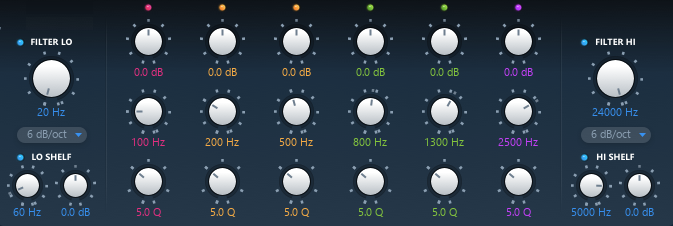

Module Settings
Analyser
Analyser Switch
The spectrum analyzer origins from the FLUX:: Pure Analyzer and has been optimized for the EVO Channel. It gives you an accurate direct view of what’s going on in the different frequency domains of your audio. When switched on, the spectrum analysis is activated and displayed in the equalization view panel. The grey waveform correspond to your input signal (post gain/drive), the same as the input meter. The black one is the output signal (post output gain), the same as the output meter.
Value Range : Enabled/Disabled
Default Value : Enabled
Analyser Slider
Controls the amount of frequency detail of the curve. Move the slider to the left to get a more smoothed curved, and to the right to get more details.
Value Range : No Value
Input
Input Gain
The input gain control trims the level of the signal at the input of EVO Channel. The meter shows both RMS signal (VU-Meter, blue) and peak signal (peak meter, green), from -24 to +18 dB range, referenced at -18dB.
Value Range : -24.0 dB / +18.0 dB
Colors : - Blue : RMS Value - Green : Peak Value
Default Value : 0.0 dB
Drive
In EVO EQ a signal Drive is available direct at the input Gain for restoring and maintaining the vitality of the sound.
The drive module has been specially designed to add a soft saturation and warmth to your audio tracks.
Value Range : 0% / 100%
Default Value : 0%
Equalization module
One of the corner stones in a Channel Strip is a well-built, efficient and complete Equalizer.
The EVO EQ is a straightforward comprehensive 4-band equalizer with additional 6-24 dB Hi/Lo filters.
The graphical interactive EQ curve is layered on top of the built in Spectrum Analyzer for hands-on editing with direct connection to the visual response.
Built with a 64 bit dynamic range, the EQ section has been carefully tuned to preserve the optimal signal to noise ratio independent of the parameter settings preventing the signal from deteriorating when the gain is reduced. It’s an efficient sharp-edged surgical precision tool for the most demanding equalizing and filtering tasks conceivable.
Equalization module is divided in two parts : - A filtering part composed of a low cut, a low shelf, a high cut and a high shelf filter. - A parametric equalization stage made of four parametric EQs.

Low-Cut Switch
Enables the low cut filter.
Value Range : Enabled / Disabled
Default Value : Enabled
Low-Cut Cutoff Frequency
Cutoff frequency of the low cut filter.
Value Range : 20Hz to sampling rate / 2
Default Value : 20Hz
Low-Cut Slope
Slope of the low cut filter.
Value Range : 6dB/oct - 24dB/oct
Default Value : 6dB/oct
Low Shelf Switch
Enables the low shelf.
Value Range : Enabled / Disabled
Default Value : Enabled
Low Shelf Cutoff
Cutoff frequency of the low shelf.
Value Range : 20Hz / 22050Hz
Default Value : 100Hz
Low Shelf Gain
Target gain for frequencies below the cutoff frequency.
Value Range : -24.0dB / +24.0dB
Default Value : 0.0dB
High-Cut Switch
Enables the high cut filter.
Value Range : Enabled / Disabled
Default Value : Enabled
High-Cut Cutoff Frequency
Cutoff frequency of the high cut filter.
Value Range : 20Hz to sampling rate / 2
Default Value : Sampling rate / 2
High-Cut Slope
Slope of the high cut filter.
Value Range : 6dB/oct - 24dB/oct
Default Value : 6dB/oct
High Shelf Switch
Enables the high shelf.
Value Range : Enabled / Disabled
Default Value : Enabled
High Shelf Cutoff
Cutoff frequency of the high shelf.
Value Range : 20Hz to sampling rate / 2
Default Value : 5000Hz
High Shelf Gain
Target gain for frequencies above the cutoff frequency.
Value Range : -24.0dB / +24.0dB
Default Value : 0.0dB
Parametric Equalization Switches
Enables the corresponding parametric equalizer.
Value Range : Enabled / Disabled
Default Value : Enabled
Parametric Equalization Gain
Gain stage of parametric equalization.
Value Range : -24.0dB / +24.0dB
Default Value : 0.0dB
Parametric Equalization Center Frequency
Center frequency of parametric equalization.
Value Range : 20Hz to sampling rate / 2
Default Value : Default value depends of the equalizer used.
- Low parametric equalizer : 200Hz
- Mid-Low parametric equalizer : 500Hz
- Mid-High parametric equalizer : 1300Hz
- High parametric equalizer : 2500Hz
Parametric Equalization Q
Q value of parametric equalization. Defines the width of the EQ band.
Value Range : 1.0 Q / 100.0 Q
Default Value : 5.0 Q
Equalization Output Gain
A stage of gain at the output of the equalization module.
Value Range : -12.0dB / +12.0dB
Default Value : 0.0dB
Output
Output Gain
The output gain control trims the level of the signal at the output of EVO Eq. The meter shows both RMS signal (VU-Meter, blue) and peak signal (peak meter, green), from -24 to +18 dB range, referenced at -18dB.
Value Range : -24.0 dB / +18.0 dB
Colors : - Blue : RMS Value - Green : Peak Value
Default Value : 0.0 dB